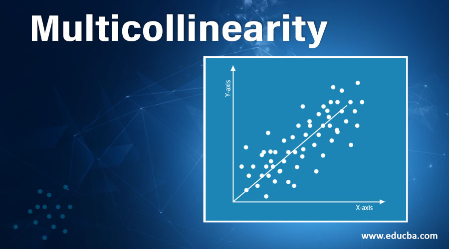
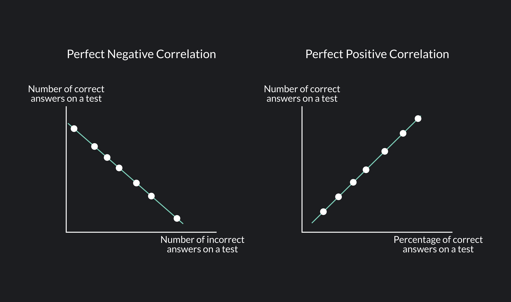
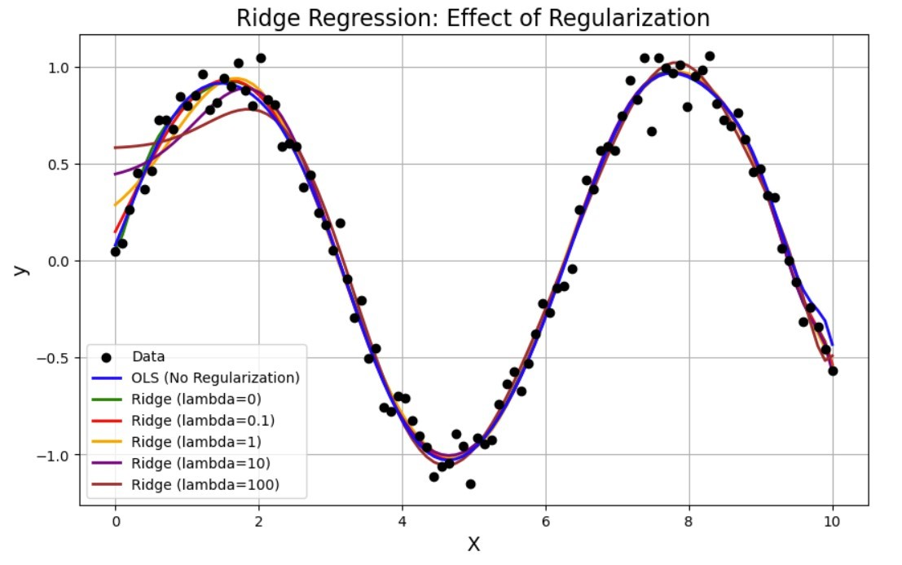

Ridge Regression#
Author : Payam Parvazmanesh
Contact : payam.manesh@gmail.com
Machine Learning
1. Introduction#
Ridge regression is a type of linear regression specifically designed to deal with multicollinearity in a data set In linear regression, the goal is to find the best-fitting hyperplane that minimizes the sum of squared differences between the observed and predicted values. However, when there are highly correlated variables, linear regression may become unstable and provide unreliable estimates..
2. What is the Multicollinearity?#
Multicollinearity is a phenomenon that occurs when several independent variables in regression progress have high correlation, but not necessarily perfect correlation, with each other.

Correlation can be both positive and negative. Positive correlation means that as one variable increases, the other also increases, while negative correlation means that as one variable increases, the other decreases. In both cases, the presence of high correlation can lead to problems in regression analysis.

3. What is the diffrent between linear regression and ridge regression#
Ridge regression introduces a regularization term that penalizes large coefficients, helping to stabilize the model and prevent overfitting. This regularization term, also known as the L2 penalty, adds a constraint to the optimization process, influencing the model to choose smaller coefficients for the predictors.
Linear Regression#
In linear regression, the goal is to find a series of coefficients,This is done using the method of least squares. One seeks the values 𝛽0,𝛽1,…,𝛽𝑝 that minimize the Residual Sum of Squares:$\( RSS = \sum_{i=1}^{n} \left( y_i - \left( w_0 + \sum_{j=1}^{p} w_j x_{ij} \right) \right)^2 \)$
Ridge Regression#
Ridge regression is very similar to the method of least squares, with the exception that the coefficients are estimated by minimizing a slightly different quantity. In reality, it’s the same quantity, just with something more, with something we call a shrinkage penalty. $\( RSS + \lambda \sum_{j=1}^{p} w_j^2 = \sum_{i=1}^{n} \left( y_i - \left( w_0 + \sum_{j=1}^{p} w_j x_{ij} \right) \right)^2 + \lambda \sum_{j=1}^{p} w_j^2 \)$
4. Shrinkage penalty#
The shrinkage penalty in ridge regression: $\( \lambda \sum_{j=1}^{p} w_j^2 \)$ refers to the regularization term added to the linear regression equation to prevent overfitting and address multicollinearity. In ridge regression, the objective is to minimize the sum of squared differences between observed and predicted values. However, to this, a penalty term is added, which is proportional to the square of the magnitude of the coefficients. This penalty term is also known as the ℓ2 norm or Euclidean norm.
𝜆≥0 is called the tuning parameter of the method, which is chosen separately. The parameter 𝜆 controls how strongly the coefficients are shrunk toward 0. When 𝜆=0, the penalty has no effect, and ridge regression reduces to the ordinary least squares method. However, as 𝜆→∞ the impact of the penalty grows, and the estimates of the coefficients 𝛽𝑗 in ridge regression shrink towards zero.
5. How can we calculate intercept?#
It should also be noted that the shrinkage penalty is applied exclusively to the coefficients 𝛽1,…,𝛽𝑝, but it does not affect the intercept term 𝛽0. We do not shrink the intercept — it represents the prediction of the mean value of the dependent variable when all predictors are equal to 0. Assuming that the variables have been centered to have a mean of zero before conducting ridge regression, the estimated intercept will take the form $\( w_0 = \frac{1}{n} \sum_{i=1}^{n} y_i \)$
Proof Steps#
Linear Regression Equation: The linear regression equation can be expressed as $\( y_i = w_0 + \sum_{j=1}^{p} w_j x_{ij} + \epsilon_i \)$
Mean of ( y ): By summing all observations and dividing by ( n ): $\( \bar{y} = \frac{1}{n} \sum_{i=1}^{n} y_i \)$
Equation in Terms of Mean: Substituting the mean into the regression equation, we can write $\( \bar{y} = w_0 + \sum_{j=1}^{p} w_j \bar{x_j} \)$
Since the predictor variables are standardized, their means are zero: $\( \bar{x_j} = 0 \)$
Substitution: Substituting this value into the equation gives u
\[ \bar{y} = w_0 + 0 \]Thus: $\( w_0 = \bar{y} \)$
6. Features of Ridge Regression#
In Ridge Regression, the model is set up with all variables given. However, it does not remove variables with low relationships from the model, it brings the coefficients of these variables closer to zero.
It is resistant to overlearning.
It is biased but has a low variance.
It is better than the Least Squares method when there are too many parameters.
It offers a solution against multidimensionality. The problem here is that the number of variables is greater than the number of observations. It offers a solution against this.
It is effective in multiple linear connection problem. The problem here is that there is a high correlation between the independent variables.
It is important to find an optimum value for λ. Cross-Validation is used for this.
7. Effect of Regularization in Ridge Regression (L2 Regularization)#
Ridge Regression (also known as L2 Regularization) is an extension of Ordinary Least Squares (OLS) regression that includes an additional penalty term to prevent overfitting. The goal is to minimize the following objective function:
Where:
\(( Y )\) is the vector of observed values (targets).
\(( X )\) is the matrix of input features (design matrix).
\(( w )\) is the vector of coefficients (weights).
\(( \lambda )\) is the regularization parameter that controls the strength of the penalty.
\(( ||w||_2^2 = w^T w)\) is the squared L2 norm of the coefficient vector, which represents the sum of the squares of the coefficients.
The first term in the objective function, \(( (Y - Xw)^T(Y - Xw) )\), is the residual sum of squares (RSS) from ordinary least squares regression. The second term, \(( \lambda ||w||_2^2 )\), is the regularization term that penalizes large values of the coefficients.
Derivation of the Closed-Form Solution}#
To find the closed-form solution for \(( w )\), we take the derivative of the objective function with respect to \(( w )\) and set it equal to zero.
1. Objective Function}#
The objective function \(( J(w) )\) is:
Expanding the first term:
Simplifying:
2. Gradient of \(( J(w) )\)#
Now, we take the gradient of \(( J(w) )\) with respect to \(( w )\):
Simplifying:
3. Setting the Gradient to Zero#
To find the minimum, we set the gradient equal to zero:
Simplifying:
Where \(( I )\) is the identity matrix, and \(( \lambda I )\) is the regularization term.
4. Solving for \(( w )\)#
Now we solve for \(( w )\):
This is the closed-form solution for Ridge regression.
Interpretation of the Solution#
The closed-form solution for Ridge regression is:
This solution is similar to the Ordinary Least Squares (OLS) solution, which is:
The key difference is the additional regularization term \(( \lambda I )\), which helps control the magnitude of the coefficients.
\(( \lambda \to 0 )\), Ridge regression behaves like ordinary least squares (OLS).
\(( \lambda \to \infty )\), the coefficients \(( w )\) shrink towards zero.
8. Kernel Ridge Regression (KRR)#
Kernel Ridge Regression (KRR) is a powerful technique that combines ridge regression (which applies L2 regularization) with the kernel trick to handle non-linear relationships between features and the target variable. By using a kernel, KRR implicitly maps input data to a higher-dimensional feature space, where linear relationships can be discovered, without ever computing the transformation explicitly.
1. Feature Mapping and the Kernel Trick#
In traditional linear regression, we assume that the relationship between the input features and the target is linear, i.e., $\( y = w^T x + b \)$ However, in many real-world problems, this assumption is too restrictive, and the data may exhibit complex, non-linear relationships.
To handle this, we apply a feature mapping \(( \varphi(x) )\), which maps the data from the original input space \(( \mathbb{R}^n )\) to a higher-dimensional feature space \(( \mathbb{R}^m )\): $\( \varphi : \mathbb{R}^n \to \mathbb{R}^m \)$
Once we apply this mapping, we can attempt to fit a linear model in the transformed feature space. However, explicitly computing the transformation \(( \varphi(x) )\) can be computationally expensive, especially if the dimensionality of the feature space is very high.
Instead of computing the feature map explicitly, we use a kernel function \(( K(x_i, x_j) )\), which computes the inner product of the feature-mapped data points: $\( K(x_i, x_j) = \langle \varphi(x_i), \varphi(x_j) \rangle \)$ This allows us to compute similarities between data points in the higher-dimensional space without having to perform the explicit mapping. Some common kernel functions are:
Linear kernel: $\( K(x_i, x_j) = x_i^T x_j \)$
Polynomial kernel: $\( K(x_i, x_j) = (x_i^T x_j + 1)^d \)$
Radial Basis Function (RBF) kernel: $\( K(x_i, x_j) = \exp \left( -\frac{\| x_i - x_j \|^2}{2\sigma^2} \right) \)$
2. Objective Function in Kernel Ridge Regression#
In Kernel Ridge Regression, the goal is to find the coefficients \(( \alpha )\) associated with each training data point. The objective function to minimize is the sum of the squared error between the predicted outputs and the actual targets, along with a regularization term: $\( \mathcal{L}(\alpha) = \| \mathbf{y} - K(X, X) \alpha \|^2 + \lambda \| \alpha \|^2 \)$ Where:
\(( \mathbf{y} )\) is the vector of actual target values for the training samples.
\(( K(X, X) )\) is the kernel matrix, where each element \(( K_{ij} = K(x_i, x_j) )\).
\(( \alpha )\) is the vector of coefficients corresponding to the training samples.
\(( \lambda )\) is the regularization parameter that controls the complexity of the model.
3. Solution for Coefficients \(( \alpha )\)#
To minimize the objective function, we take the derivative with respect to \(( \alpha )\) and set it equal to zero: $\( K(X, X) \alpha = \mathbf{y} \)$
Solving for \(( \alpha )\): $\( \alpha = (K(X, X) + \lambda I)^{-1} \mathbf{y} \)$ Where:
\(( I )\) is the identity matrix.
\(( \lambda )\) is the regularization parameter, which penalizes large coefficients to prevent overfitting.
4. Making Predictions#
Once we have the coefficients \(( \alpha )\), the prediction for a new input \(( x )\) is given by: $\( \hat{y} = \sum_{i=1}^n \alpha_i K(x_i, x) \)$ Where:
\(( \alpha_i )\) is the coefficient corresponding to the \(i-th\) training data point \(( x_i )\).
\(( K(x_i, x) )\) is the kernel function that measures the similarity between the new sample \(( x )\) and the training data points \(( x_i )\).
9. Ridge Regression and the Bayesian View#
Ridge regression is a model that minimizes prediction error while adding a penalty term on the model parameters. The objective function includes the sum of squared differences between the actual and predicted values, along with a penalty on the magnitude of the coefficients \(( w )\). This model is especially useful when there are many input variables or when multicollinearity exists among the variables.
1. Likelihood Function and Prior Distribution#
Suppose the data \(( y_i )\) are normally distributed with a linear mean \(( \beta_0 + x_i^T w )\) and variance \(( \sigma^2 )\): $\( y_i \sim N(\beta_0 + x_i^T w, \sigma^2) \)\( This implies that \)( y_i )\( is centered around \)( \beta_0 + x_i^T w )\( with normal noise. This relationship defines the likelihood function for the data. If we consider all the data, the likelihood for the entire dataset, assuming independence between observations, is: \)\( p(y | w) = \prod_{i=1}^n \frac{1}{\sqrt{2 \pi \sigma^2}} \exp \left( -\frac{(y_i - (\beta_0 + x_i^T w))^2}{2 \sigma^2} \right) \)$
2. Prior Distribution#
In the Bayesian framework, we place a prior distribution on the model parameters. Here, we assume that each parameter \(( w_j )\) independently follows a normal distribution with zero mean and variance \(( \tau^2 )\): $\( w_j \sim N(0, \tau^2), \quad \forall j \)\( Thus, the prior distribution on \)( w )\( is: \)\( p(w) = \prod_{j=1}^p \frac{1}{\sqrt{2 \pi \tau^2}} \exp \left( -\frac{w_j^2}{2 \tau^2} \right) \)$
3. Posterior Distribution and Its Connection to Ridge Regression#
Using Bayes’ theorem, the posterior distribution of the parameters \(( w )\) given the data \(( y )\) is: $\( p(w | y) \propto p(y | w) \cdot p(w) \)\( By substituting in the likelihood \)( p(y | w) )\( and the prior \)( p(w) )\(, we find the posterior distribution. To simplify this, we take the negative logarithm of the posterior: \)\( -\log p(w | y) = -\log p(y | w) - \log p(w) + \text{constant} \)\( Expanding this expression, we get: \)\( -\log p(w | y) = \sum_{i=1}^n \frac{(y_i - (\beta_0 + x_i^T w))^2}{2 \sigma^2} + \sum_{j=1}^p \frac{w_j^2}{2 \tau^2} + \text{constant} \)\( This closely resembles the ridge regression objective function. By defining \)( \lambda = \frac{\sigma^2}{\tau^2} )\(, we can rewrite the expression as: \)\( -\log p(w | y) = \frac{1}{2 \sigma^2} \sum_{i=1}^n (y_i - (\beta_0 + x_i^T w))^2 + \frac{\lambda}{2} \sum_{j=1}^p w_j^2 + \text{constant} \)\( This is identical to the ridge regression objective function: \)\( \text{Ridge Objective:} \quad \min_w \left\{ \sum_{i=1}^n (y_i - (\beta_0 + x_i^T w))^2 + \lambda \sum_{j=1}^p w_j^2 \right\} \)\( Thus, minimizing the ridge regression objective function is equivalent to finding the mode of the posterior distribution of \)( w )$.
Interpretation of the Result#
Since the posterior distribution of \(( w )\) is Gaussian (due to both the likelihood and the prior being normal), the mode and mean of this distribution are the same. Therefore, the optimal value obtained from ridge regression represents both the mode and mean of the posterior distribution of \(( w )\).
In simpler terms, the ridge regression estimate for the parameters \(( w )\) is the value that maximizes the posterior probability (mode) and, since the distribution is Gaussian, it is also the posterior mean.
10. Python code that demonstrates the benefits of using Ridge Regression, particularly showing how the regularization parameter \((\lambda)\) affects the model’s ability to prevent overfitting and improve generalization.#
import numpy as np
import matplotlib.pyplot as plt
from sklearn.linear_model import Ridge, LinearRegression
from sklearn.preprocessing import PolynomialFeatures
# Generating synthetic data
np.random.seed(42)
X = np.linspace(0, 10, 100).reshape(-1, 1)
y = np.sin(X).ravel() + 0.1 * np.random.randn(100) # Adding some noise
# Polynomial feature transformation (to simulate a non-linear relationship)
poly = PolynomialFeatures(degree=15)
X_poly = poly.fit_transform(X)
# Fit Linear Regression (OLS)
ols = LinearRegression()
ols.fit(X_poly, y)
y_pred_ols = ols.predict(X_poly)
# Fit Ridge Regression with different values of lambda (alpha)
lambdas = [0, 0.1, 1, 10, 100]
ridge_preds = {}
for lam in lambdas:
ridge = Ridge(alpha=lam)
ridge.fit(X_poly, y)
ridge_preds[lam] = ridge.predict(X_poly)
# Plotting the results
plt.figure(figsize=(10, 6))
# Plot the original data
plt.scatter(X, y, color='black', label='Data', zorder=5)
# Plot the OLS model prediction (no regularization)
plt.plot(X, y_pred_ols, color='blue', label='OLS (No Regularization)', linewidth=2, zorder=4)
# Plot Ridge predictions for different lambdas
colors = ['green', 'red', 'orange', 'purple', 'brown']
for lam, color in zip(lambdas, colors):
plt.plot(X, ridge_preds[lam], label=f'Ridge (lambda={lam})', color=color, linewidth=2, zorder=3)
# Styling the plot
plt.title('Ridge Regression: Effect of Regularization', fontsize=16)
plt.xlabel('X', fontsize=14)
plt.ylabel('y', fontsize=14)
plt.legend()
plt.grid(True)
# Show plot
plt.show()
H:\HadiSadoghiYazdi\PL\Lib\site-packages\sklearn\linear_model\_ridge.py:216: LinAlgWarning: Ill-conditioned matrix (rcond=1.80049e-29): result may not be accurate.
return linalg.solve(A, Xy, assume_a="pos", overwrite_a=True).T

References#
The Elements of Statistical Learning
What is Ridge Regression? Link to the page.